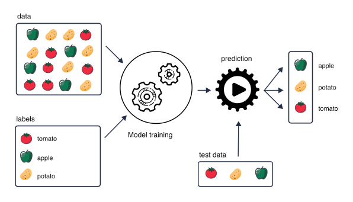
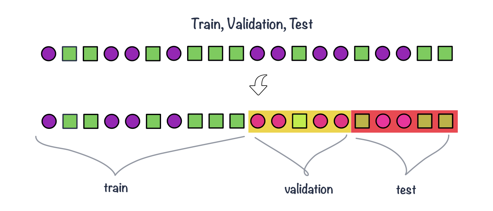
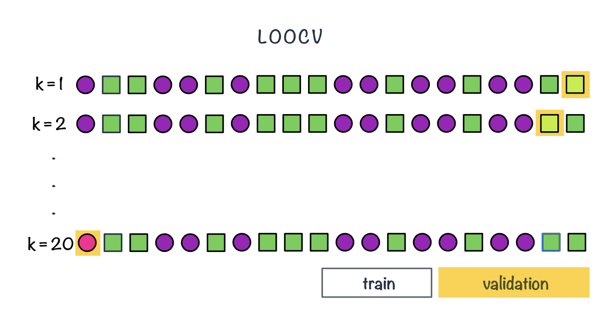
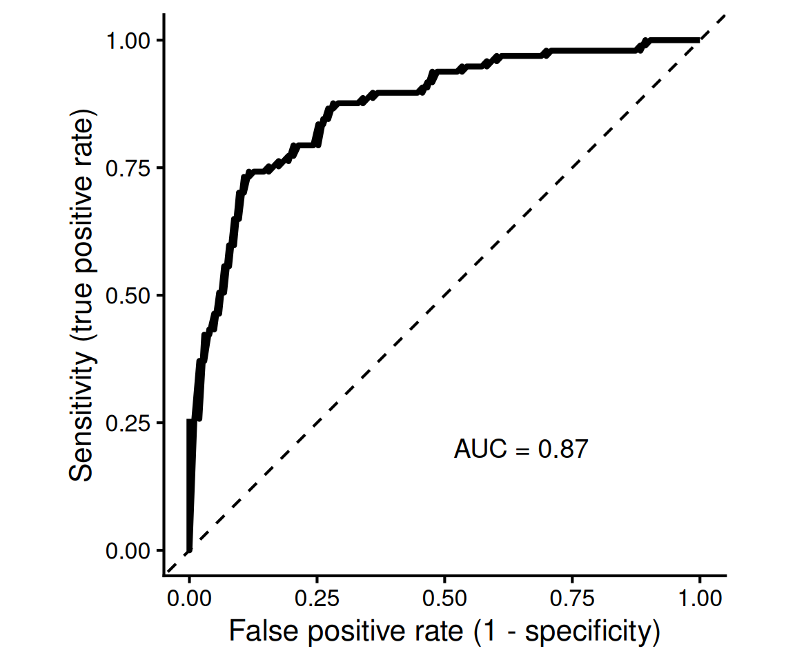

Code
library(knitr)
include_graphics("images/supervised.png")
So far, we have mainly used statistical models for inference: to learn about relationships in the data and to quantify the effects of explanatory variables on an outcome. For example, in a linear regression we may ask whether an outcome is associated with age, treatment or another variable, and estimate the size and uncertainty of these associations.
Another goal is prediction. Here, we use observed data to build a model that can predict the outcome for new observations.
For example, we can train a model using biopsy images labelled as benign or malignant. Given an image from a new biopsy, the trained model can then predict whether it is benign or malignant (classification task).
Or we can train a model For example, we can start with DNA methylation measurements at thousands of CpG sites from individuals of known chronological age. During model building, we may select a subset of CpG sites that are useful for prediction. Given methylation measurements from a new individual, the trained model can then predict their age (regression task).
When prediction is our goal, an important question is therefore not only how well the model describes the data used to fit it, but how well it performs on new, unseen data.
In supervised learning, we use observations for which the outcome is already known to train a model. The measured variables are used as predictors, while the known outcome provides the label or target that we want the model to learn to predict.
This is in contrast to unsupervised learning, such as clustering or Principal Component Analysis (PCA), where there is no predefined outcome. Instead, the aim is to identify patterns or structure in the data, for example groups of samples with similar molecular profiles.
library(knitr)
include_graphics("images/supervised.png")
Training a model means using the observed data to estimate the model parameters so that the predictors are linked to the outcome. Depending on the type of outcome, this may be a regression or a classification task.
Once trained, the model can be used to make predictions for new observations.
A model can often be made to fit the observed data very well. However, good performance on the data used to train the model does not necessarily mean that it will perform equally well on new data.
If a model adapts too closely to the particular patterns, noise or peculiarities of the training data, it may fail to generalize to new observations. This is known as overfitting.
To obtain a more realistic estimate of predictive performance, we therefore separate the data used to train the model from the data used to evaluate it. This is the basic idea behind data splitting.



Nested cross-validation uses two cross-validation loops:
For example, in 5-fold nested cross-validation:
The final estimate of predictive performance is obtained by summarizing performance across the outer test folds.
For regression tasks, the outcome is numeric and the prediction is a number:
\[ \hat{y}_i \]
For each observation, we can compare the observed value \(y_i\) with the predicted value \(\hat{y}_i\). The difference between them is the prediction error:
\[ e_i = y_i - \hat{y}_i \]
When we evaluate regression models, it is useful to distinguish between two related but different goals:
In classical regression modelling, we often assess model fit using quantities such as R^2$, adjusted \(R^2\), AIC or BIC. In prediction-focused modelling, however, we usually want to estimate the prediction error on data that were not used to train the model. This is why regression performance is often evaluated using a validation set, a test set, or cross-validation.
Measures of model fit summarize how well the model describes the observed data.
A familiar example is \(R^2\), which measures the proportion of variation in the outcome that is explained by the model:
\[ R^2 = 1 - \frac{RSS}{TSS} \]
where
\[ RSS = \sum_{i=1}^{n}(y_i - \hat{y}_i)^2 \]
and
\[ TSS = \sum_{i=1}^{n}(y_i - \bar{y})^2 \]
Adjusted \(R^2\) adds a penalty for the number of predictors in the model:
\[ R_{adj}^2 = 1 - (1 - R^2)\frac{n-1}{n-p-1} \]
where \(n\) is the number of observations and (p) is the number of predictors.
This is useful because adding more predictors will usually increase (R^2), even if the additional predictors are not very useful. Adjusted \(R^2\) therefore tries to balance goodness of fit against model complexity.
Other model comparison criteria include the Akaike Information Criterion (AIC) and the Bayesian Information Criterion (BIC). For linear regression models with normally distributed errors, these can be written, up to constants, in terms of the residual sum of squares:
\[ AIC = n \log(RSS/n) + 2k \]
\[ BIC = n \log(RSS/n) + k\log(n) \]
where \(k\) is the number of fitted parameters in the model.
Both AIC and BIC reward better fit but penalize model complexity. A lower AIC or BIC indicates a better balance between fit and complexity. BIC usually gives a stronger penalty for complexity than AIC, especially when the sample size is large.
However, these are still measures of model fit or model comparison. They do not directly tell us how well the model will predict future observations.
When the goal is prediction, we usually evaluate the model on observations that were not used during training. These may come from a validation set, a test set, or cross-validation.
The most common regression metrics are based on the difference between observed and predicted values.
Mean Squared Error (MSE) is the average squared prediction error:
\[ MSE = \frac{1}{N}\sum_{i=1}^{N}(y_i - \hat{y}_i)^2 \]
Because errors are squared, large prediction errors receive a stronger penalty. However, the MSE is expressed in squared units, which can make it harder to interpret.
Root Mean Squared Error (RMSE) is the square root of the MSE:
\[ RMSE = \sqrt{\frac{1}{N}\sum_{i=1}^{N}(y_i - \hat{y}_i)^2} \]
RMSE is in the same units as the outcome, which makes it easier to interpret. For example, if we are predicting age in years, RMSE is also measured in years.
Mean Absolute Error (MAE) is the average absolute prediction error:
\[ MAE = \frac{1}{N}\sum_{i=1}^{N}|y_i - \hat{y}_i| \]
MAE is also in the same units as the outcome. Compared with RMSE, it is less strongly affected by large errors.
Mean Absolute Percentage Error (MAPE) expresses the error as a percentage of the observed value:
\[ MAPE = \frac{100}{N}\sum_{i=1}^{N}\left|\frac{y_i - \hat{y}_i}{y_i}\right| \]
MAPE can be useful when percentage errors are easy to interpret. However, it is problematic when observed values are zero or close to zero.
There is no single best regression metric. The choice depends on the scientific question and on what type of error matters most.
For prediction, the key idea is that the metric should be calculated on data that were not used to train the model.
A model that fits the training data very well may still perform poorly on new data. Therefore, when our goal is prediction, we care most about the error on validation, test or cross-validation data.
For a classification task, the outcome consists of two or more classes rather than a continuous value. For example, we may want to predict whether a tumour is benign or malignant, or whether a patient has disease or no disease.
To evaluate a classifier, we compare the true class labels with the classes predicted by the model.
Many binary classification models first produce a score or probability for belonging to the positive class. A classification threshold is then used to convert this value into a predicted class. For example, using a threshold of 0.5:
The choice of threshold affects the numbers of correct and incorrect classifications and therefore affects many classification performance metrics.
As for regression, predictive performance should ideally be evaluated using observations that were not used to train the model, for example using validation data, test data or cross-validation.
The simplest way to evaluate a classifier is to calculate the proportion of observations that were classified correctly.
For \(N\) observations,
\[ Accuracy = \frac{\text{number of correct predictions}}{N}. \]
For a binary classifier, this can be written as
\[ Accuracy = \frac{TP+TN}{TP+TN+FP+FN}. \]
The misclassification rate is the proportion of incorrect predictions:
\[ Misclassification\ rate = 1 - Accuracy. \]
Accuracy is easy to interpret, but it can be misleading when the classes are imbalanced.
For example, suppose only 5% of individuals have a disease. A classifier that predicts no disease for every individual would have an accuracy of 95%, despite being unable to identify any diseased individuals.
We therefore often need to examine performance separately for the positive and negative classes.
A confusion matrix compares the true class labels with the predicted class labels.
For a binary classification task:
| Predicted positive | Predicted negative | |
|---|---|---|
| Actual positive | True positive (TP) | False negative (FN) |
| Actual negative | False positive (FP) | True negative (TN) |
The four possible outcomes are:
Several commonly used classification metrics can be calculated from these four quantities.
Sensitivity measures how well the classifier identifies observations that truly belong to the positive class:
\[ Sensitivity = \frac{TP}{TP+FN}. \]
It answers the question:
Of all observations that are truly positive, what proportion did the model identify correctly?
Sensitivity is also called the true positive rate (TPR) or recall.
A classifier with high sensitivity has relatively few false negatives.
For example, in disease detection, high sensitivity means that most individuals who truly have the disease are detected by the classifier.
Specificity measures how well the classifier identifies observations that truly belong to the negative class:
\[ Specificity = \frac{TN}{TN+FP}. \]
It answers the question:
Of all observations that are truly negative, what proportion did the model identify correctly?
Specificity is also called the true negative rate (TNR).
A classifier with high specificity has relatively few false positives.
For example, in disease detection, high specificity means that most healthy individuals are correctly identified as healthy.
Precision measures how many of the observations predicted to be positive are actually positive:
\[ Precision = \frac{TP}{TP+FP}. \]
It answers the question:
Of all observations predicted to be positive, what proportion are truly positive?
Precision is also known as the positive predictive value (PPV).
A classifier with high precision makes relatively few false-positive predictions.
Sensitivity and precision therefore answer different questions:
Sensitivity, specificity, precision and accuracy usually depend on the classification threshold.
For example, lowering the threshold for predicting the positive class will generally classify more observations as positive. This tends to:
Increasing the threshold usually has the opposite effect.
There is therefore often a trade-off between sensitivity and specificity, and the appropriate threshold depends on the scientific or clinical context.
For example, if missing a disease is particularly costly, we may prefer a lower threshold and prioritize high sensitivity. If false-positive results lead to costly or invasive follow-up procedures, specificity may be particularly important.
Rather than evaluating the classifier at only one threshold, we can examine its performance across many possible thresholds using the Receiver Operating Characteristic (ROC) curve.
The ROC curve plots:
\[ Sensitivity \]
against
\[ 1-Specificity \]
for different classification thresholds.

Thus, the ROC curve shows the trade-off between correctly identifying positive observations and incorrectly classifying negative observations as positive.
The Area Under the ROC Curve (ROC AUC) summarizes this curve using a single number.
ROC AUC ranges from 0 to 1:
Unlike accuracy, sensitivity or specificity at a particular threshold, ROC AUC summarizes the model’s ability to rank positive observations above negative observations across all possible thresholds.
Importantly, a high ROC AUC does not automatically mean that a particular classification threshold will be useful in practice. The threshold and the resulting sensitivity, specificity and precision still need to be considered for the application.
There is no single best metric for every classification problem. The appropriate metric depends on the question and on the consequences of different types of errors.
As with regression, these metrics should be calculated using held-out or cross-validation predictions when the goal is to estimate performance on new data.